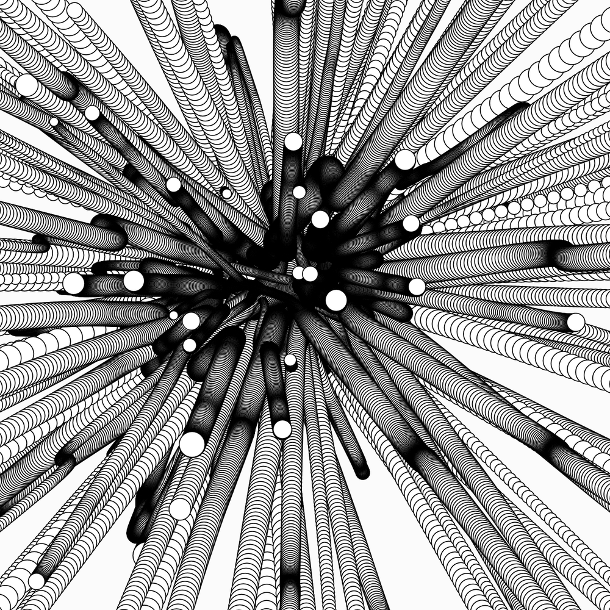
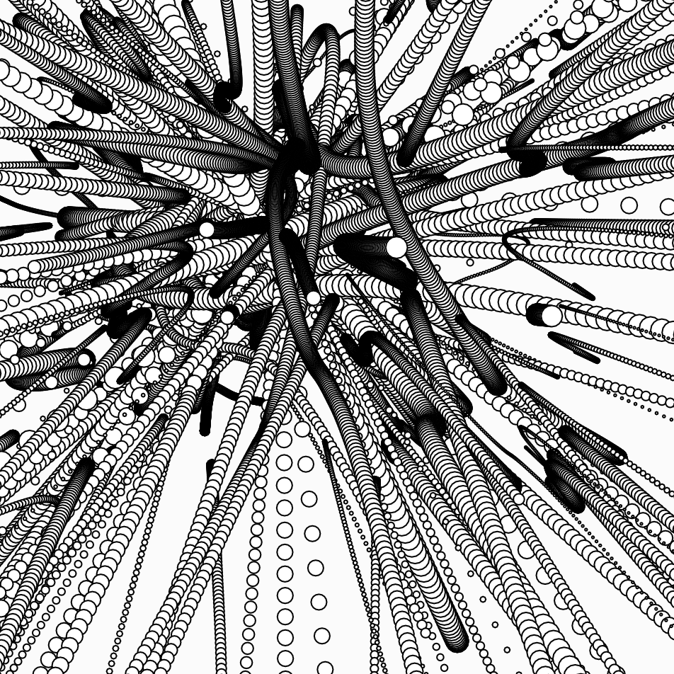
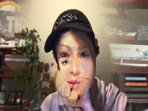
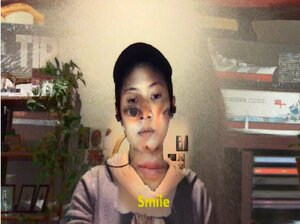

code playground
☁ learning, playing, drawing with code ☁☂
↑
I grew up with in the Neopets and Livejournal school of coding. After spending the next decade feeling like I couldn't pursue software "seriously", I fell back in back in love with code. These are some of my experiments that helped me rediscover computational play.
p5.js



max msp

